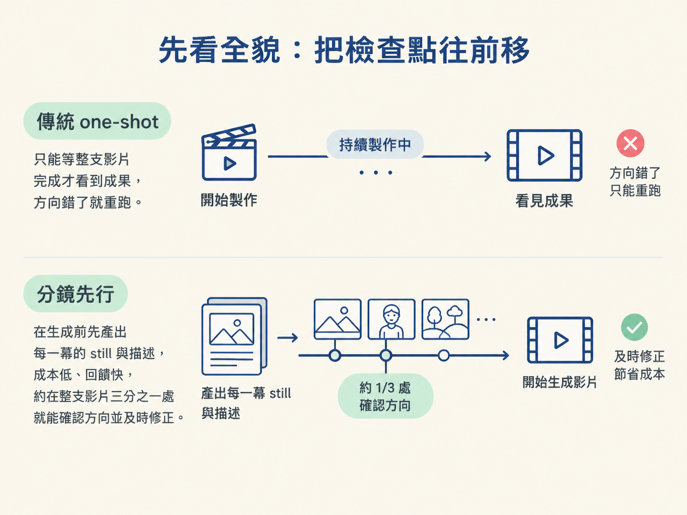
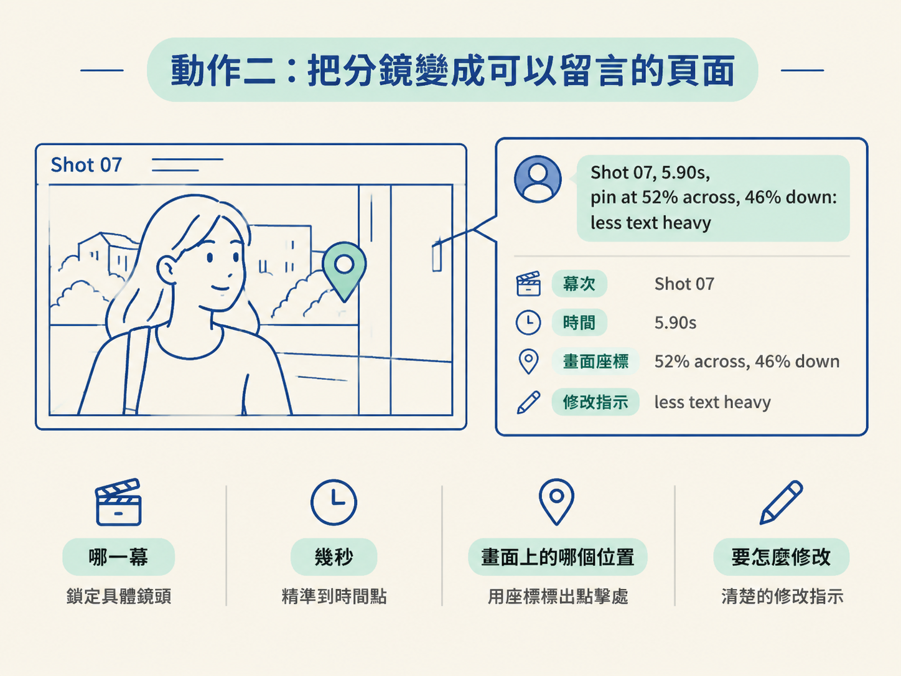

完成後，你會得到一頁可以檢查、留言的故事板。Claude 會先產出每一幕的 still（靜態畫面）與描述；你可以直接在畫面上釘選留言，讓每則留言帶著幕次、時間與座標。最後，把所有留言一次貼回，再決定要重新做一版分鏡，還是直接生成影片。
動手前，你只需要準備一個想做成 15 秒動態圖像影片的主題或產品。這一關不靠自己畫分鏡，重點是先讓 Claude 把方向攤在桌上，讓你在真正花費影片生成成本之前，就能看出它是不是走對路。
Level 1 最大的痛點是時機。你得等它把每一段動畫都做完、token 都燒光，才第一次看到成果。如果方向錯了，你花掉的不只是錢，還有時間；重跑一次，又得再付一次。
這一節要做的事，就是把「看到成果」的時間點往前拉。你可以把它想成拍片前先看分鏡：先確認鏡頭、畫面和節奏大致對不對，再讓整支影片真正動起來。
分鏡的價值在於：它會在動畫開始之前，先給你每一幕的 still，加上那一幕會發生什麼事的描述。因為只是靜態畫面與文字，製作成本低、回來得快，你大約在整支影片三分之一的地方，就能看見它準備往哪裡走。若方向不對，這時還來得及把它拉回來。

整個流程可以拆成三個動作：
第一個 prompt 的關鍵，是清楚說出兩件事：先不要做影片，以及你想先看到哪些內容。只要把下面程式碼中的第一行換成你的主題或產品，其餘照貼即可。
I want a 15-second motion graphics video about [your topic or product]. Don't make the video yet.
Storyboard it first: build each scene as HTML in the final look, without the animation, and take a
screenshot of each one. Put the screenshots in order on one page, each with its start time and a
short description of what happens in that scene, like "the camera whips to the first panel, then
continues across the panels". Then stop and wait for my comments.這段指令會要求 Claude 把每一幕做成接近最終樣貌的 HTML，但先不加入動畫。接著，它會替每一幕截圖，按照順序排在同一頁，並附上開始時間與簡短描述。
預期結果是一頁故事板。每張圖下面會有像「鏡頭甩到第一塊面板，然後繼續橫掃過去」這樣的說明。此時影片還沒有 render，但你已經能看見它準備怎麼安排畫面與動作。
你當然可以直接在聊天室裡描述修改，但影片和設計工作通常更適合直接在畫面旁邊留言。因為釘選在畫面上的留言，會同時保留確切的幕次、時間，以及你點擊的位置。
模型收到的就不只是「文字有點多」，而會是「第 07 幕、5.90 秒、畫面橫向 52%、縱向 46% 的位置，文字太多了」。請貼上以下指令：
Make the storyboard page one I can comment on.
When I click a spot on a frame, pin a comment
there. Each comment keeps the shot, its time and
the spot I clicked. Add a Copy all comments
button that copies every comment as one list I
can paste back to you.完成後，你會得到一頁可以逐格點擊、逐格留言的分鏡。實際產生的留言可能會長成這樣：
Shot 07, 5.90s, pin at 52% across, 46% down: less text heavy這則留言一次帶上了四項資訊：哪一幕、幾秒、畫面上的哪個位置，以及要怎麼修改。這就像在紙本分鏡上貼標籤，不會留下「你說的是哪一個畫面？」的模糊地帶。

把整份分鏡看完，該修改的地方都釘選留言後，按下「Copy all comments」，將留言複製成一份清單，再貼回 Claude。使用以下指令：
Here are my comments on the storyboard: [paste
all your comments]. Each one names the shot, the
time and the spot I clicked. Apply every comment
and change nothing else. Then [show me a new
storyboard and wait / build the video from the
storyboard].最後一個中括號，是你要做的判斷：
show me a new storyboard and wait，讓 Claude 先依照留言更新分鏡。build the video from the storyboard，直接從分鏡生成影片。指令裡的 change nothing else 也很重要。它是在提醒 Claude：只套用你列出的修改，不要順手改動其他地方。這樣每一輪的修改範圍才會乾淨，你也比較容易判斷這次調整到底有沒有奏效。
完成這三個動作後，你會有一頁可檢查的故事板：每一幕都有 still、開始時間和動作描述；每個需要修改的地方，也都能透過釘選留言精確指出。你可以把它當成影片正式開拍前的檢查點：先確認畫面方向，再決定是否投入完整生成。
分鏡 = 每一幕的 still，加上那一幕會發生什麼的描述，在東西開始動之前先看到。留言時盡量釘在畫面上，因為每則釘選都會帶著確切的時間與座標。走完整份、一次貼回，再決定要新分鏡還是直接生成。做完的成果，就是一頁你可以指著它說「這裡、這裡還有這裡」的故事板。
到這裡，你已經能在生成前擋掉大部分方向錯誤，通常可以把成果帶到目標的八成到九成。不過，分鏡看不到聲音，也還沒有真正的剪點，因此最後那一小段仍要等影片動起來後才能確認。
下一節就是最後一哩路：對著真正的影片執導。